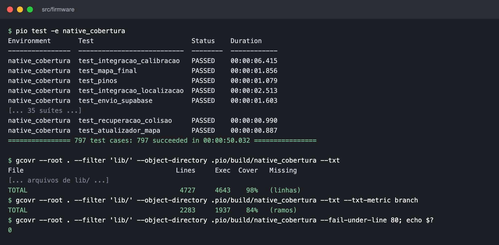
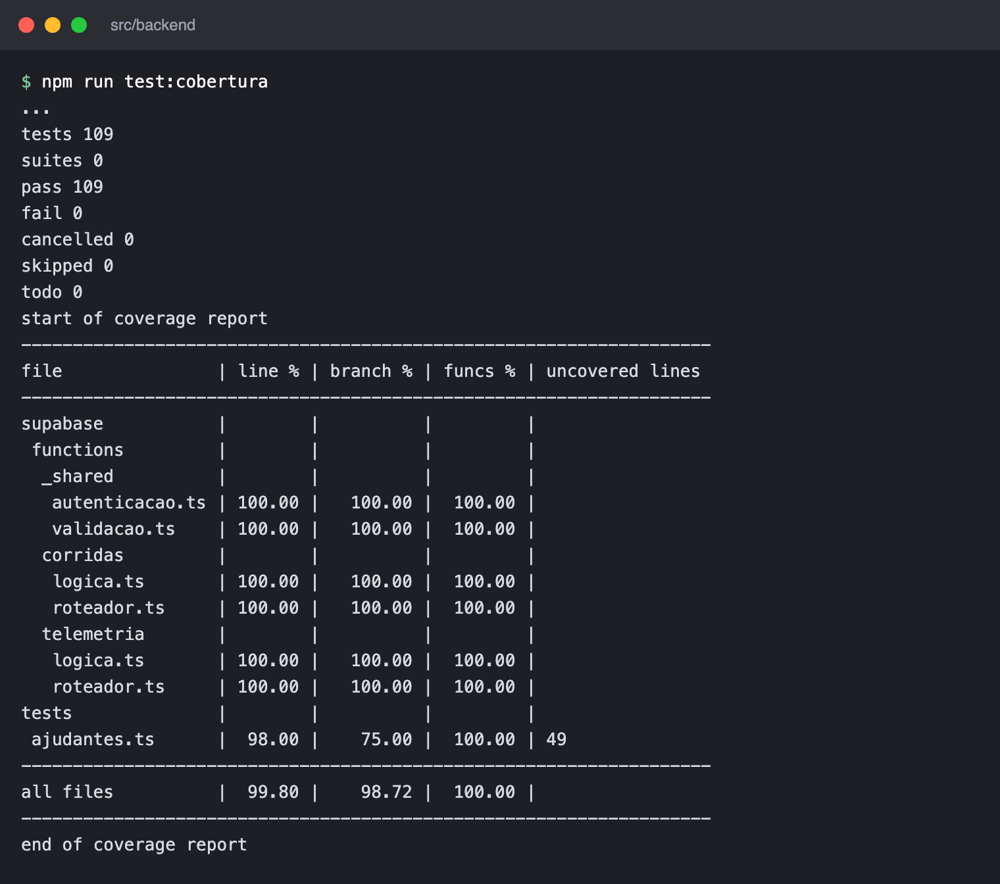
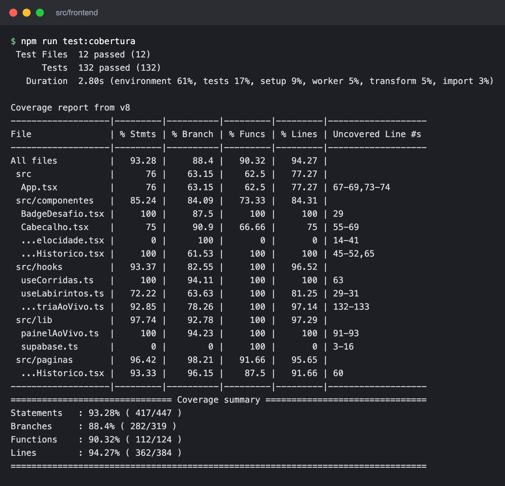
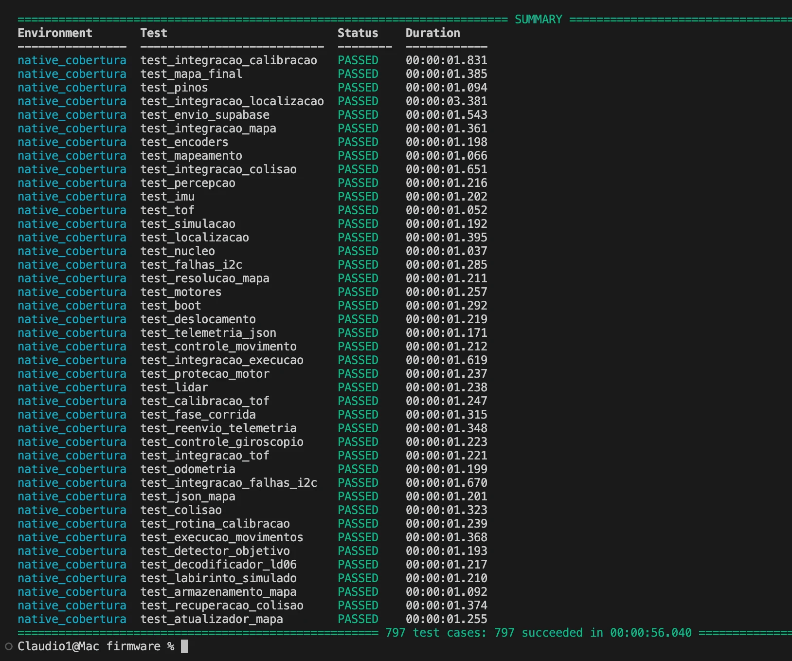
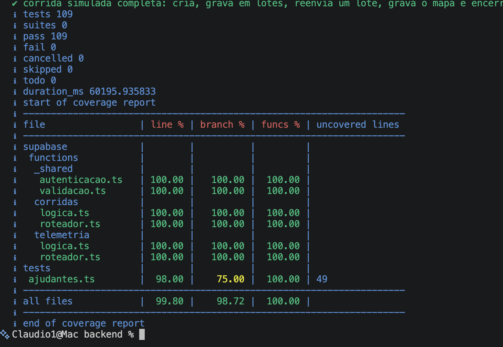
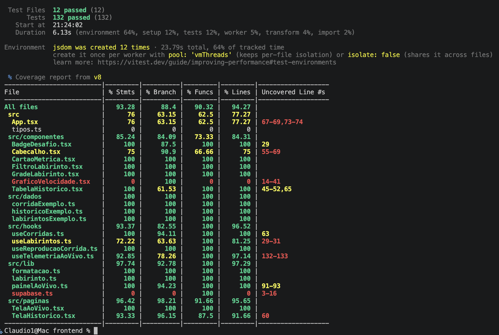

Testes de Software¶
Testes de software¶
Este documento reúne a evidência dos testes de software da ED1: resultado, cobertura de código-fonte e a ligação entre as histórias de usuário (HUs) e os testes. O registro caso a caso de cada tarefa, por sprint, está em Registro de execução dos testes.
Escopo da ED1¶
A ED1 avalia testes isolados de software, com simuladores. Os testes automatizados cobrem as três camadas sem hardware real:
- Firmware (C++ no ESP32-C3): PlatformIO e Unity, rodando no computador, com sensores, motores, Wi-Fi e labirinto simulados.
- Backend (Supabase):
node:testsobre as Edge Functions e as funções SQL, com um PostgreSQL de verdade em WebAssembly (PGlite). - Frontend (React): Vitest e Testing Library, com um cliente Supabase simulado.
Teste unitário é o de um módulo isolado, com dependências simuladas. Teste de integração encadeia módulos reais: as suítes test_integracao_* do firmware (o robô simulado anda num labirinto e o firmware só vê o que veria na placa), a Edge Function com as funções SQL no PGlite e as telas e hooks com o Supabase simulado. O teste de sistema (E2E) não faz parte desta entrega, conforme definido com o professor, e fica para a ED2.
Resultado da execução¶
Execução de 26/10/2026 sobre o commit 9612a3b da main, por Cláudio Henrique, em macOS.
| Camada | Ferramentas | Comando (em src/<camada>) |
Testes | Unitários | Integração | Resultado | Cobertura de linhas |
|---|---|---|---|---|---|---|---|
| Firmware | PlatformIO 6.2.0, Unity, gcovr 8.6 | pio test -e native_cobertura |
797 (42 suítes) | 746 | 51 | 797 aprovados, 0 falhas | 98,2%; ramos 84,8% |
| Backend | node:test, PGlite 0.5.10 |
npm run test:cobertura |
109 (8 arquivos) | 52 | 57 | 109 aprovados, 0 falhas | 99,80%; ramos 98,72% |
| Frontend | Vitest 5.0.5, Testing Library, v8 | npm run test:cobertura |
132 (12 arquivos) | 85 | 47 | 132 aprovados, 0 falhas | 94,27%; ramos 88,40% |
| Total | 1 038 | 883 | 155 | 1 038 aprovados, 0 falhas | todas acima de 80% |
O critério é de pelo menos 80% do código-fonte. No firmware e no backend o CI falha se a cobertura de linhas ficar abaixo disso. A medição inclui:
- Firmware: todo o
lib/que roda no computador (4 727 linhas). Ficam de fora omain.cppe os drivers de hardware (lib/drivers_esp32), que só compilam para a placa. - Backend: lógica, roteador e autenticação das Edge Functions. O
index.tsde cada função (Deno.serve) não roda no Node e é conferido pelodeno checkdo CI. - Frontend: todo o
src/, exceto os testes,src/test/emain.tsx.
| Outra verificação | Comando | Resultado |
|---|---|---|
| Compilação para a ESP32-C3 | pio run -e esp32c3 |
Sucesso. RAM 26,9% (88 292 de 327 680 bytes), Flash 74,0% (969 906 de 1 310 720 bytes) |
| Tipagem e build do frontend | npm run build |
Sucesso |
| Tipagem das Edge Functions | deno check (CI do backend) |
Sucesso |
Evidência da execução¶
O CI do GitHub executou as mesmas suítes no mesmo commit, todas com sucesso: CI Firmware, CI Backend e CI Frontend.
Saída dos comandos¶
As figuras 1 a 3 mostram a saída dos comandos no commit 9612a3b, com as linhas intermediárias omitidas onde há [...].



Execução local¶
As figuras 4 a 6 são capturas do terminal do notebook de Cláudio Henrique, com os mesmos comandos e os mesmos resultados.



Módulos de teste¶
Os testes estão agrupados em 13 módulos por assunto. Cada suíte pertence a um só módulo, e a coluna de HUs mostra quais histórias o módulo verifica. Os nomes das suítes levam ao código de teste na main e as HUs levam às issues de histórias de usuário. As suítes do firmware ficam em src/firmware/test/, as do backend em src/backend/ e as do frontend ao lado do código em src/frontend/src/.
Histórias de usuário e protótipos¶
As HUs e os critérios de aceitação estão em Requisitos funcionais, e os frames de alta fidelidade, no Protótipo Funcional Navegável. A interface em React implementa as telas de aguardando largada, corrida em andamento, desafio concluído e histórico, com prints no registro por sprint. A tabela liga cada HU (issue com a etiqueta HU) ao detalhamento no projeto de software, ao frame do protótipo e aos módulos de teste que a verificam.
O roteiro de testes funcionais guia os testes de sistema da próxima entrega.
Escopo da próxima entrega (ED2)¶
| Issue | Teste | Por que não está na ED1 |
|---|---|---|
| #175 | Teste de bancada dos sensores VL53L0X | Exige os sensores reais montados. |
| #185 | Teste de corrida completa no labirinto | Exige o robô montado e o labirinto real. |
| #232 | Teste ponta a ponta: corrida do ESP32 ao dashboard | É teste de sistema, deixado para a próxima entrega. |
| #237 | Medição da latência ponta a ponta | Mede o RNF-05 (até 2 s) com o robô e o dashboard reais. |
| - | Testes de sistema funcionais (E2E) pela interface gráfica | Seguem o roteiro de testes funcionais. |
Como reproduzir¶
Com PlatformIO 6.2.0, gcovr 8.6 e Node 22, a partir da raiz do repositório: